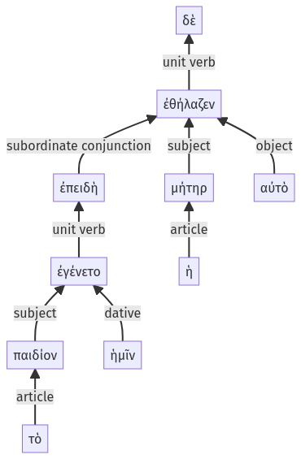

Lysias, Oration 1, 1.9.29-1.9.38a
1.9.1-1.9.28a | 1.9.39-1.9.57a
Sentence 18
1.9.29-1.9.38a
ἐπειδὴ δὲ τὸ παιδίον ἐγένετο ἡμῖν, ἡ μήτηρ αὐτὸ ἐθήλαζεν:
2 ἐπειδὴ τὸ παιδίον ἐγένετο ἡμῖν
1 ἡ μήτηρ αὐτὸ ἐθήλαζεν
ἐπειδὴ δὲ τὸ παιδίον ἐγένετο ἡμῖν, ἡ μήτηρ αὐτὸ ἐθήλαζεν:
Highlighting:
- connecting words
- unit verb
- subject
- object
Color code:
- independent clause (level 1, transitive verb)
- subordinate clause (level 2, linking verb)
